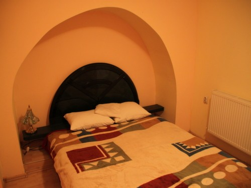
Cameră dublăCameră dublă
Cameră cu caracter, cu alcov arcuit de epocă, baie proprie, aer condiționat, TV și Wi-Fi gratuit.
Cereredisponibilitate la telefon
Rezervă
Centrul Vechi · Baia Mare, Maramureș ★★★
Pensiunea Casa Rusu te așteaptă într-o clădire de patrimoniu de pe strada Crișan, la câțiva pași de Turnul Ștefan și de piața Centrului Vechi. Camere primitoare cu baie proprie, o curte liniștită cu terasă și un mic dejun de care oaspeții își aduc aminte.
Bine ai venit
Pensiunea Casa Rusu are un istoric aparte, datorat frumuseții și păstrării autenticității arhitecturii sale. Clădirea, cu fațada ei verde-roz și ancadramentele de epocă, este ușor de recunoscut pe strada Crișan, în chiar inima Centrului Vechi din Baia Mare.
Cele 14 camere — duble, twin, de familie și apartamente — sunt decorate individual, cu baie proprie (duș sau cadă), aer condiționat, televizor cu ecran plat și Wi-Fi gratuit. La parter se deschide o curte interioară liniștită, cu terasă și zonă de relaxare, unde se servește dimineața un mic dejun apreciat de oaspeți.
„O clădire cu suflet, la doi pași de Turnul Ștefan și de piața orașului vechi.”
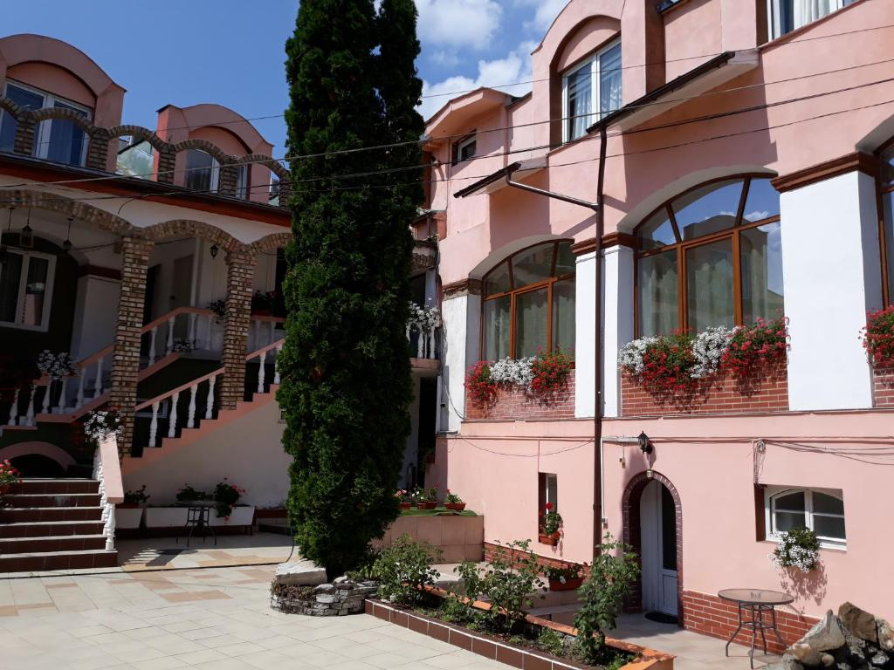
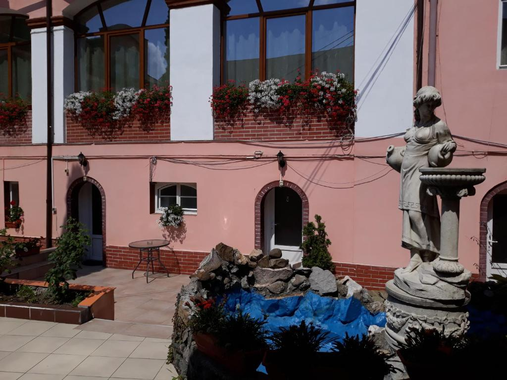
Camere
Toate camerele au baie proprie, aer condiționat, TV cu ecran plat și Wi-Fi gratuit. Disponibilitatea și tarifele exacte se confirmă direct la telefon.

Cameră dublăCameră cu caracter, cu alcov arcuit de epocă, baie proprie, aer condiționat, TV și Wi-Fi gratuit.
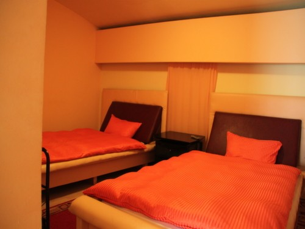
Cameră twinIdeală pentru doi prieteni sau colegi de drum: două paturi separate, baie proprie, TV și internet gratuit.
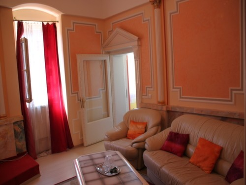
Apartament & familieSpații generoase, cu zonă de living, tavane înalte și decor de epocă — potrivite pentru familii sau șederi mai lungi.
Toate camerele includ baie proprie (duș sau cadă), uscător de păr, aer condiționat, TV cu ecran plat, frigider și Wi-Fi gratuit. Micul dejun este inclus. Sunt disponibile camere pentru nefumători.
Facilități
De la micul dejun inclus și curtea cu terasă, până la Wi-Fi și aer condiționat în fiecare cameră — totul la îndemână.
Un mic dejun foarte bun, apreciat de oaspeți, servit în fiecare dimineață.
Internet wireless gratuit în camere și în spațiile comune ale pensiunii.
Aer condiționat în fiecare cameră, pentru un somn liniștit tot anul.
Curte interioară liniștită, cu terasă, jardiniere înflorite și zonă de relaxare.
Camere spațioase, potrivite pentru familii și pentru șederile mai lungi.
Recepție primitoare și parcare în zonă. Se vorbește română și engleză.
Spațiu elegant cu scară de epocă, potrivit pentru mese festive și întâlniri.
Muzeele, Turnul Ștefan și piața orașului vechi, toate la câțiva pași.
Galerie
Fațada de patrimoniu, curtea cu terasă, camerele și micul dejun din Baia Mare.
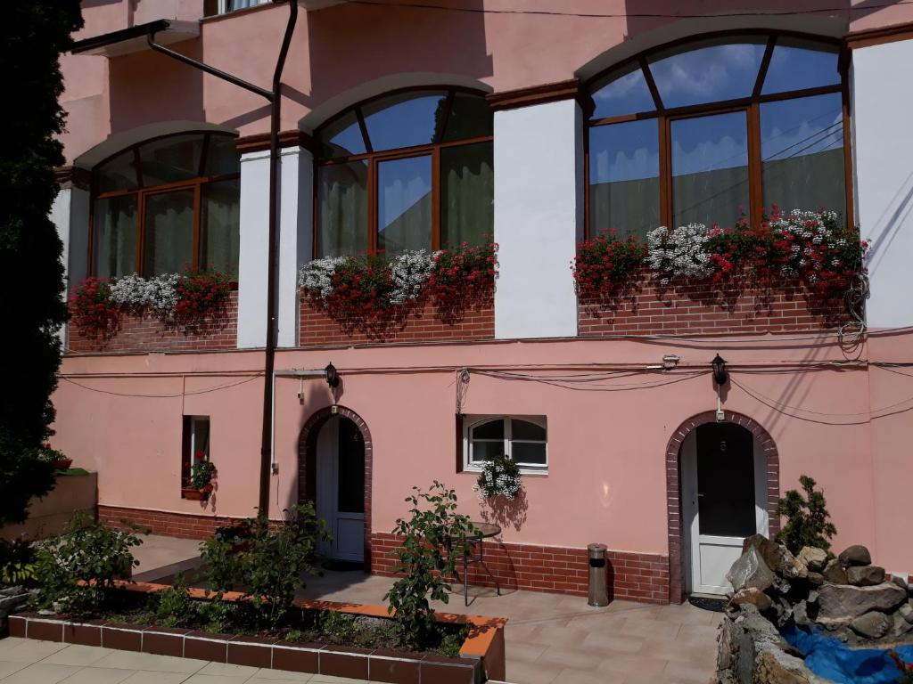
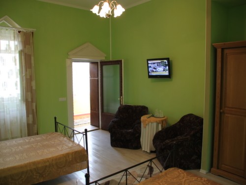
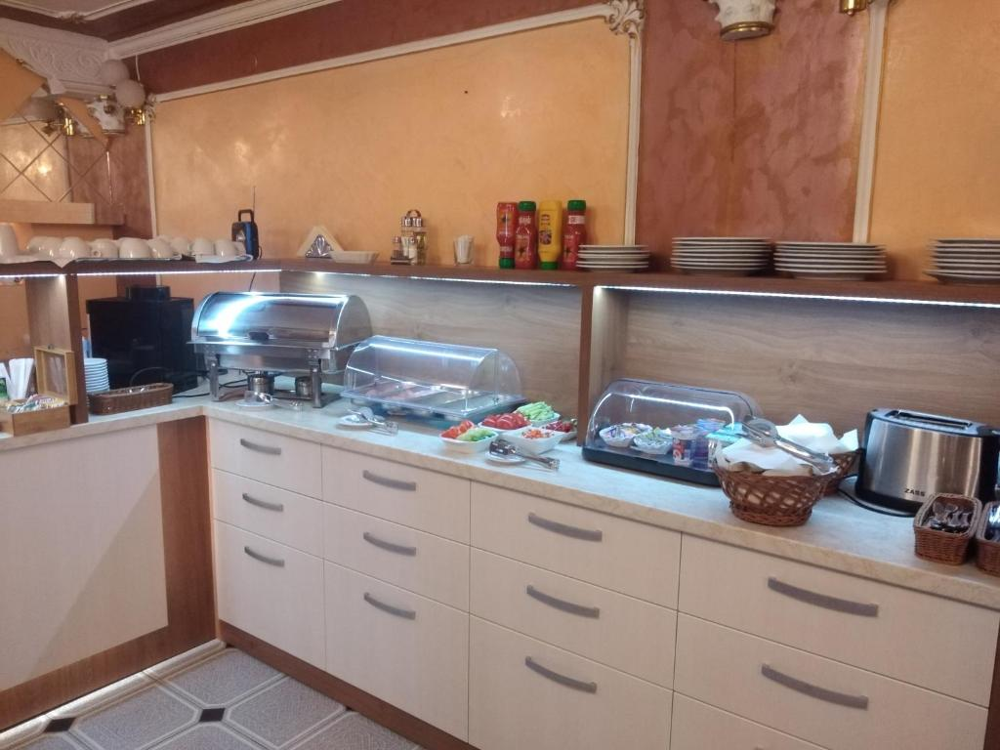
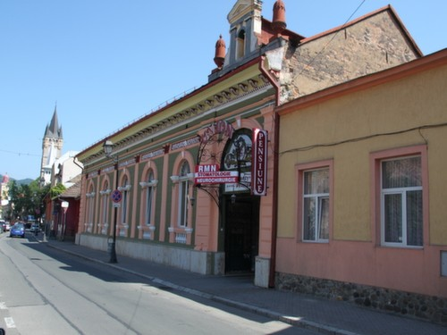
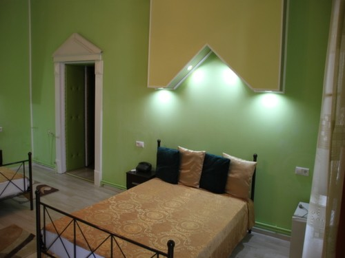
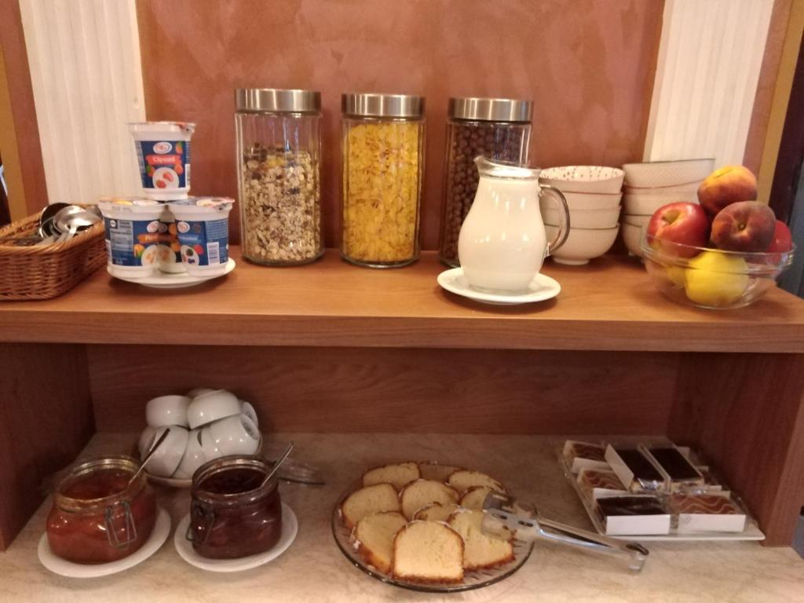
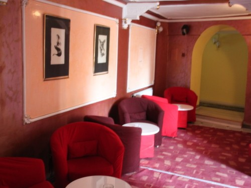
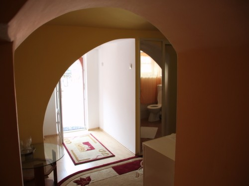
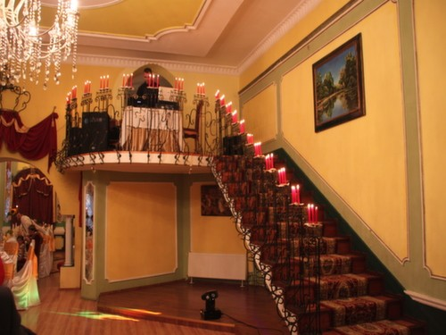
Ce apreciază oaspeții
★★★★★„Poziționare excelentă, chiar în Centrul Vechi — totul se vizitează pe jos.”
— Oaspete, Baia Mare
★★★★★„Cameră curată, cu baie proprie și aer condiționat, într-o clădire cu mult farmec.”
— Oaspete, sejur de business
★★★★★„Micul dejun a fost foarte bun, iar curtea cu terasă — o surpriză plăcută.”
— Oaspete, weekend în Maramureș
Scor „foarte bun” pe portalurile de rezervări · vezi și pagina de Facebook pentru fotografii recente.
Contact & Locație
Strada Crișan nr. 9
430405 Baia Mare, județul Maramureș
(Centrul Vechi, lângă Turnul Ștefan)
| Check-in | 14:00 – 21:30 |
|---|---|
| Check-out | 07:00 – 11:00 |
| Liniște | 22:00 – 08:00 |
Se vorbește română și engleză. Rezervare din timp recomandată.
Cazare 3★ într-o clădire de patrimoniu din Centrul Vechi al Băii Mari, cu mic dejun inclus și Wi-Fi gratuit. Sună-ne și îți găsim camera potrivită.